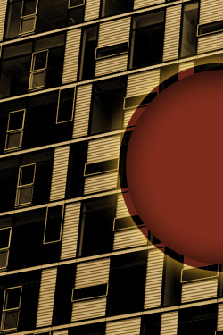

Puzzle 3 Positioned



Given the Keys provided for going into folders (e.g. folder/) and back directories (e.g. ../), you are responsible for linking this document to the puzzle images and external style sheet.
Once you have completed the 3 puzzles, we will look at aligning the images to give the appearance of one composite image through the use of Tables, Floats, and Positioning.
If you are quick as a whip, you are welcome to try to align them on your own. However, please be sure to complete the puzzles first, and know that answers/guidance will be given to the class as a whole. In other words, you are on you own until we all get there. :)